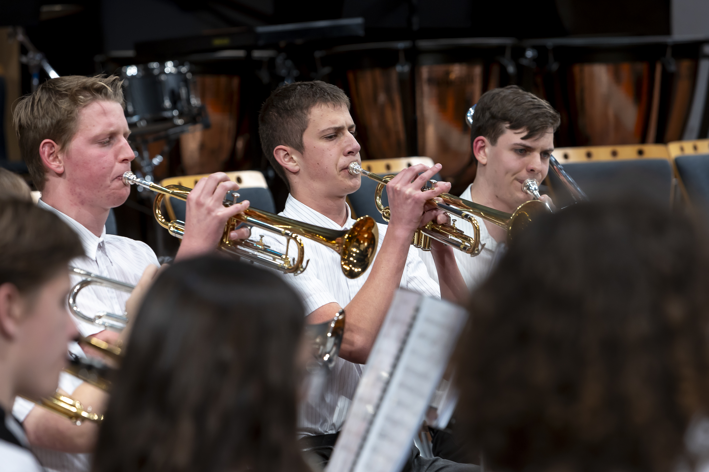

Wombo Combo
The Orewa College Wombo Combo Band focuses upon playing jazzy and upbeat pieces. We take a big focus upon soloing aswell. We practice these pieces for a year and then perform them for adjudicators at the KBB music festival and the NZCBA nationals. This photo was taken at the KBB music festival 2023.
Concert Band
The Orewa College Concert Band focuses upon playing classical and interesting pieces. We practice these pieces for a year and then perform them for adjudicators at the KBB music festival and the NZCBA nationals. This photo was taken at the KBB music festival 2023.

Senior Jazz Band
The Orewa College Senior Jazz Band focuses upon playing jazzy and upbeat pieces. We take a big focus upon soloing aswell. We practice these pieces for a year and then perform them for adjudicators at the KBB music festival and the NZCBA nationals. This photo was taken at the KBB music festival 2023.
Social Media
I help run the Orewa College music department social media and give Orewa College a larger online presence. The social media brings the hype and stores the memories of past years.
Click for OC Instagram